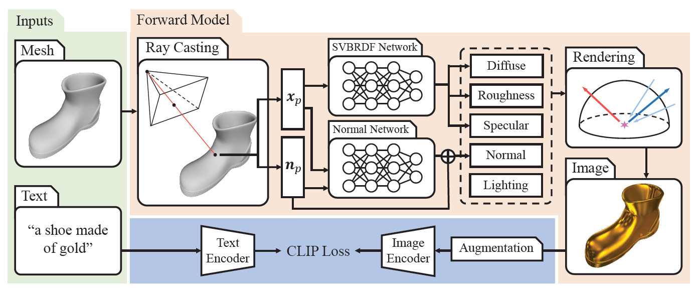

|
Rui Chen is a first-year graduate student at the South China University of Technology, working under the guidance of Prof. Kui Jia. My research focuses on the combination of computer graphics and computer vision, specifically in the realm of creating high-quality 3D assets using generative models and physically-based rendering techniques. My email is riorui@foxmail.com. |
Reasearch
Fantasia3D: Disentangling Geometry and Appearance for High-quality Text-to-3D Content Creation
Rui Chen*, Yongwei Chen*, Ningxin Jiao, Kui Jia
ICCV2023 | Paper | Project Page | Code | Video

TANGO: Text-driven Photorealistic and Robust 3D Stylization via Lighting Decomposition
Yongwei Chen, Rui Chen, Jiabao Lei, Yabin Zhang, Kui Jia
NeurIPS 2022 (spotlight) | Paper | Project Page | Code
